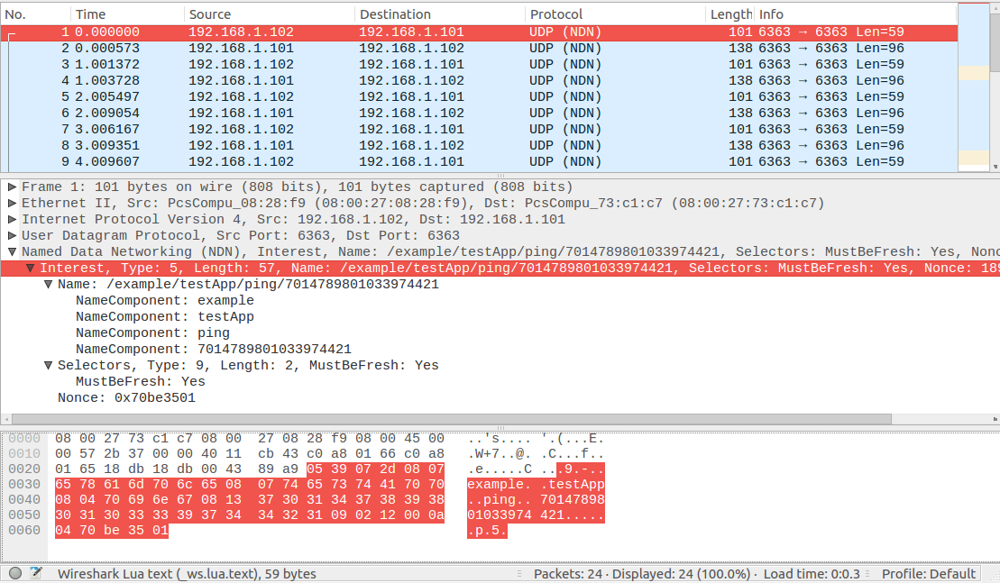

2017/08/03 - Named Data Networking (NDN) installation guide - part 1¶
Introduction¶
In this installation guide, I will demostrate how to install ndn-cxx, nfd, and use ndnping to test two node are reacharable. After I succeed to test ndnping, I will use Wireshark to dissect NDN packets.
My Platform¶
Ubuntu 16.04.2 Server (64-bit)
ndn-cxx installation [1]¶
Overview¶
ndn-cxx is a C++ library, implementing Named Data Networking (NDN) primitives that can be used to implement various NDN applications. The library is current being used as part of some projects, see more projects.
Requirement¶
- python >= 2.6
- libsqlite3
- libcrypto++
- OpenSSL >= 1.0.1
- pkg-config
- Boost libraries >= 1.54
Install all requirements¶
sudo apt-get install build-essential libcrypto++-dev libsqlite3-dev libboost-all-dev libssl-dev
Download ndn-cxx source from github [2]¶
git clone https://github.com/named-data/ndn-cxx && cd ndn-cxx
Build ndn-cxx¶
Change directory to the ndn-cxx, then use the following commands :
./waf configure --with-examples
./waf
sudo ./waf install
sudo ln -s /usr/local/lib/libndn-cxx.so.0.5.1 /usr/lib/
Now, if we want to run the ndn-cxx example, we also need NFD to forward our pakcets.
NFD installation¶
Overview¶
Named Data Networking Forwarding Daemon (NFD) is a network forwarder that implements and evolves together with the Named Data Networking (NDN) protocol. After the initial release, NFD will become a core component of the NDN Platform and will follow the same release cycle.
Install all requirements¶
sudo apt-get install pkg-config libpcap-dev
{kind=link}
Run the ndn-cxx example¶
Test on localhost¶
Now we can run ndn-cxx example to test our installation on localhost.
Terminal 1 :
cd ~/ndn-cxx
./build/examples/producer
Terminal 2 :
cd ~/ndn-cxx
./build/examples/consumer
Test on two nodes¶
Assume that we have two nodes :
PC1 (producer) : 192.168.1.101
PC2 (consumer) : 192.168.1.102
PC2 needs to know the route to PC1
nfdc register /example/testApp udp://192.168.1.101
Then run producer program on PC1 and run consumer on PC2.
ndn-tools installation [4]¶
Overview¶
ndn-tools is a collection of essential tools for Named Data Networking. These tools are recommended to be installed on all NDN nodes.
Tools in this collection include:
- ping
- dump
- dissect-wireshark
- ... see more
Download source from github¶
git clone https://github.com/named-data/ndn-tools.git
Build¶
Change directory to the ndn-tools, then use the following commands :
./waf configure
./waf
sudo ./waf install
Test ndnping [5]¶
PC1 (192.168.1.101)
ndnpingserver ndn:/example/testApp
PC2 (192.168.1.102)
nfdc register /example/testApp udp://192.168.1.101
ndnping ndn:/example/testApp
Using Wireshark to dissect NDN packets¶
To enable NDN packets dissector for all future Wireshark sessions, you can create/edit Wireshark’s init.lua script, which located in /usr/share/wireshark. The dofile command should be added to the end of init.lua file:
-- dofile("/full/path/to/ndn.lua")
dofile("/usr/local/share/ndn-dissect-wireshark/ndn.lua")
Then the wireshark can recognize the NDN packets:
Reference¶
| [1] | Getting started with ndn-cxx : http://named-data.net/doc/ndn-cxx/current/INSTALL.html |
| [2] | ndn-cxx - NDN C++ library with eXperimental eXtensions : https://github.com/named-data/ndn-cxx |
| [3] | NFD - Named Data Networking Forwarding Daemon : https://github.com/named-data/NFD |
| [4] | NDN Essential Tools : https://github.com/named-data/ndn-tools |
| [5] | ndnping and ndnpingserver : https://github.com/named-data/ndn-tools/tree/master/tools/ping |